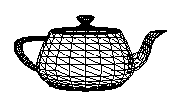
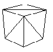
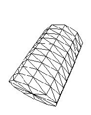
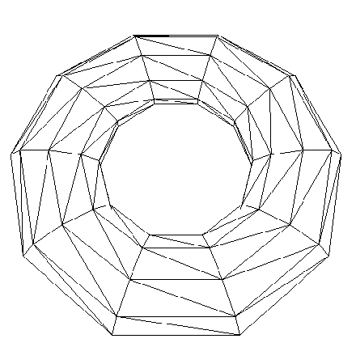
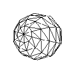

|
Direct3D繪製
創建緩存 創建緩存 Direct3D 使用 IDirect3DVertexBuffer9 IDirect3DIndexBuffer9 接口表示 點緩存和 索取緩存 使用 HRESULT CreateVertexBuffer( [in] UINT Length, //緩衝區大小 [in] DWORD Usage, //指定如何使用緩存 [in] DWORD FVF, //點描述 [in] D3DPOOL Pool, //容納點緩存的 內存池 [out, retval] IDirect3DVertexBuffer9 **ppVertexBuffer,//返回 緩存接口 [in] HANDLE *pSharedHandle //為0 系統保留 ); 創建點緩存 使用 HRESULT CreateIndexBuffer( [in] UINT Length, [in] DWORD Usage, [in] D3DFORMAT Format, //指定索引大小D3DFMT_INDEX16 (16位索引) D3DFMT_INDEX32(32位索引) [in] D3DPOOL Pool, [out, retval] IDirect3DIndexBuffer9 **ppIndexBuffer, //返回緩存接口 [in] HANDLE *pSharedHandle //0系統保留 ); 創建索取緩存 Usage取值 可 多個 | D3DUSAGE_DYNAMIC //動態緩存 D3DUSAGE_POINTS //存儲點圖元 僅用於頂點緩存 D3DUSAGE_SOFTWAREPROCESSIGN //軟件頂點運算方式 D3DUSAGE_WRITEONLY //對緩存的操作模式為只寫 要操作緩存中的數據 需要先 Lock 用完 需要 Unlock HRESULT IDirect3DVertexBuffer9::Lock( [in] UINT OffsetToLock, //鎖定位置 相對緩衝區開頭偏移 0 [in] UINT SizeToLock, //鎖定字節 0 全部鎖定 [out] VOID **ppbData, //返回 讀寫操作緩衝區 [in] DWORD Flags //鎖定方式 0 ); HRESULT IDirect3DIndexBuffer9::Lock( [in] UINT OffsetToLock, [in] UINT SizeToLock, [out] VOID **ppbData, [in] DWORD Flags ); Flags 其他取值 可多個 | D3DLOCK_DISCARD //只能用於動態緩存 指示硬件將緩存內容丟棄 並返回重新分配的內存指針(硬件會繼續使用 被丟棄的緩存完成未完成的繪製) D3DLOCK_NOOVERWRITE //... 數據只能以追加方式寫入 緩存 不能覆蓋當前用於繪製的 數據 D3DLOCK_READONLY //此鎖定的數據 只能被讀取 動態緩存 未使用D3DUSAGE_DYNAMIC創建的緩存為 靜態緩存 其放置在現存中 此緩存 讀寫較慢 但繪製高效 一般用於保存 地形 城市建築等 通常不需要修改的數據 使用 D3DUSAGE_DYNAMIC 創建的 為動態緩存 其一般放置在AGP存儲區中 讀寫較快 但繪製較慢(需要先 傳入緩存 再繪製 自然慢) 一般用於存儲需要 頻繁變換的數據 如粒子系統 返回信息 //下面函數 分別返回 點緩存 索引緩存 信息
HRESULT IDirect3DVertexBuffer9::GetDesc(
[out] D3DVERTEXBUFFER_DESC *pDesc
);
HRESULT IDirect3DIndexBuffer9::GetDesc(
[out] D3DINDEXBUFFER_DESC *pDesc
);
typedef struct D3DVERTEXBUFFER_DESC {
D3DFORMAT Format;
D3DRESOURCETYPE Type;
DWORD Usage;
D3DPOOL Pool;
UINT Size;
DWORD FVF;
} D3DVERTEXBUFFER_DESC, *LPD3DVERTEXBUFFER_DESC;
typedef struct D3DINDEXBUFFER_DESC {
D3DFORMAT Format;
D3DRESOURCETYPE Type;
DWORD Usage;
D3DPOOL Pool;
UINT Size;
} D3DINDEXBUFFER_DESC, *LPD3DINDEXBUFFER_DESC;
example //自定義 點 結構
struct Vertex
{
float x_;
float y_;
float z_;
static const DWORD FVF;
Vertex()
{
x_ = y_ = z_ = 0.0f;
}
Vertex(const float x,const float y,const float z)
{
x_ = x;
y_ = y;
z_ = z;
}
};
const DWORD Vertex::FVF = D3DFVF_XYZ;
//定義緩存接口
IDirect3DVertexBuffer9 *pVertex_buffer = 0;
IDirect3DIndexBuffer9 *pIndex_buffer = 0;
//創建頂點緩存 索引緩存
pDevice->CreateVertexBuffer(8 * sizeof(Vertex)
,D3DUSAGE_WRITEONLY
,Vertex::FVF
,D3DPOOL_MANAGED
,&pVertex_buffer
,0
);
pDevice->CreateIndexBuffer(36 * sizeof(WORD)
,D3DUSAGE_WRITEONLY
,D3DFMT_INDEX16
,D3DPOOL_MANAGED
,&pIndex_buffer
,0
);
//寫入點數據
Vertex* pVertexs;
pVertex_buffer->Lock(0
,0
,(void**)&pVertexs
,0
);
pVertexs[0] = Vertex(-1.0f,-1.0f,-1.0f);
pVertexs[1] = Vertex(-1.0f,1.0f,-1.0f);
pVertexs[2] = Vertex(1.0f,1.0f,-1.0f);
pVertexs[3] = Vertex(1.0f,-1.0f,-1.0f);
pVertexs[4] = Vertex(-1.0f,-1.0f,1.0f);
pVertexs[5] = Vertex(-1.0f,1.0f,1.0f);
pVertexs[6] = Vertex(1.0f,1.0f,1.0f);
pVertexs[7] = Vertex(1.0f,-1.0f,1.0f);
pVertex_buffer->Unlock();
WORD* pIndexs;
pIndex_buffer->Lock(0
,0
,(void**)&pIndexs
,0
);
//front
pIndexs[0] = 0;
...
pIndexs[35] = 7;
pIndex_buffer->Unlock();
注意 32位索取 緩存 並不被所有設備支持 使用前 應該檢測設備 是否支持 繪製狀態 Direct3D 封裝了多種 繪製狀態 這些狀態將 影響幾何體的繪製方式 一旦改變 狀態 其將一直有效 使用 HRESULT SetRenderState( [in] D3DRENDERSTATETYPE State, //D3DRS_FILLMODE(改變繪製狀態) [in] DWORD Value //D3DFILL_WIREFRAME(使用線框繪製) ... ); 設置狀態 繪製 繪製操作 需要放在 HRESULT IDirect3DDevice9::BeginScene() ... HRESULT IDirect3DDevice9::EndScene() 之間 繪製前 需要先設置繪製源 以及點描述 最後進行 繪製 使用 HRESULT IDirect3DDevice9::SetStreamSource( [in] UINT StreamNumber, //標識與頂點緩存 建立 鏈接的 數據流 0(一個) [in] IDirect3DVertexBuffer9 *pStreamData, //數據源 頂點 緩衝區 [in] UINT OffsetInBytes, //從 緩衝區 開頭的 偏移字節 0 [in] UINT Stride //每個點數據 大小 ); 設置繪製源 之後使用 HRESULT IDirect3DDevice9::SetIndices( [in] IDirect3DIndexBuffer9 *pIndexData ); 設置 索取緩存(若使用索引繪製的話) 再使用 HRESULT IDirect3DDevice9::SetFVF( [in] DWORD FVF ); 設置點描述 最後使用 HRESULT DrawPrimitive( [in] D3DPRIMITIVETYPE PrimitiveType, //繪製圖元類型D3DPT_TRIANGLELIST(三角形) [in] UINT StartVertex, //數據中 開始繪製的要繪製的數量 索引 [in] UINT PrimitiveCount // ); 用點緩存 繪製 或 HRESULT DrawIndexedPrimitive( [in] D3DPRIMITIVETYPE Type, //要繪製的圖元類型 D3DPT_TRIANGLELIST(三角形) [in] INT BaseVertexIndex, //從點緩存中第n個數據開始 讀取數據(以不必讀取全部數據) [in] UINT MinIndex, //運行使用的最小索引（一般為0 不理解何意） [in] UINT NumVertices, //本次調用 將引用的頂點數 [in] UINT StartIndex, //頂點緩存中 要被索取的起始點 索取 [in] UINT PrimitiveCount //要繪製的圖元總數 ); 用索取緩存 繪製 example pDevice->Clear(0,0,D3DCLEAR_TARGET | D3DCLEAR_ZBUFFER,0xffffffff,1.0f,0); pDevice->BeginScene(); pDevice->SetStreamSource(0,pVertex_buffer,0,sizeof(Vertex)); pDevice->SetIndices(pIndex_buffer); pDevice->SetFVF(Vertex::FVF); pDevice->DrawIndexedPrimitive(D3DPT_TRIANGLELIST,0,0,8,0,12); pDevice->EndScene(); pDevice->Present(0,0,0,0); D3DXCreate* Direct3D 提供了幾個基本的幾何體 可以直接使用 D3DXCreate* 創建 幾何體網格 D3DXCreateBox D3DXCreateSphere D3DXCreateCylinder D3DXCreateTeapot D3DXCreatePolygon D3DXCreateTorus 其都會返回一個 ID3DXMesh 指針接口 使用ID3DXMesh的 HRESULT DrawSubset( [in] DWORD AttribId ); 繪製 幾何體 D3DXCreate* 
//茶壺
D3DXCreateTeapot(pDevice
,&pMeshs[0]
,0);

//長方體
D3DXCreateBox(pDevice
,2.0f // width
,2.0f // height
,2.0f // depth
,&pMeshs[1]
,0);

//創建一個氣缸
D3DXCreateCylinder(pDevice
,1.0f //一面園半徑
,1.0f //另外一面園半徑
,3.0f //圓柱高
,10 //柱面 切塊數
,10 //底面園 切塊數
,&pMeshs[2]
,0);

//創建一個花缸
D3DXCreateTorus(pDevice
,1.0f //內園半徑
,3.0f //外園半徑
,10 //切塊數
,10 //環繞切塊數
,&pMeshs[3]
,0);

//創建一個球
D3DXCreateSphere(pDevice
,1.0f //半徑
,10 //切塊
,10 //切塊
,&pMeshs[4]
,0);
example LPD3DXMESH mesh = 0 ;
D3DXCreateTeapot(pDevice,&mesh,0);
...
pDevice->BeginScene();
mesh->DrawSubset(0);
pDevice->EndScene();
...
if(mesh)
{
mesh->Release();
mesh=0;
}
|